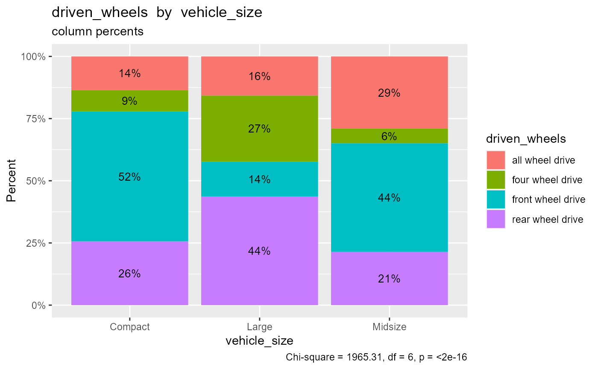

This function creates a two way frequency table.
crosstab( data, rowvar, colvar, type = c("freq", "percent", "rowpercent", "colpercent"), total = TRUE, na.rm = TRUE, digits = 2, chisquare = FALSE, plot = FALSE )
Arguments
| data | data frame |
|---|---|
| rowvar | row factor (unquoted) |
| colvar | column factor (unquoted) |
| type | statistics to print. Options are |
| total | logical. if TRUE, includes total percents. |
| na.rm | logical. if TRUE, deletes cases with missing values. |
| digits | number of decimal digits to report for percents. |
| chisquare | logical. If |
| plot | logical. If |
Value
If plot=TRUE, return a ggplot2 graph.
Otherwise the function return a list with 6 components:
table(table). Table of frequencies or percentstype(character). Type of table to printtotal(logical). IfTRUE, print row and or column totalsdigits(numeric). number of digits to printrowname(character). Row variable namecolname(character). Column variable namechisquare(character). Ifchisquare=TRUE, contains the results of the Chi-square test.NULLotherwise.
Details
Given a data frame, a row factor, a column factor, and a type (frequencies, cell percents, row percents, or column percents) the function provides the requested cross-tabulation.
If na.rm = FALSE, a level labeled <NA> added. If
total = TRUE, a level labeled Total is added. If
chisquare = TRUE, a chi-square test of independence is
performed.
See also
Examples
# print frequencies crosstab(mtcars, cyl, gear)#> gear #> cyl 3 4 5 Total #> 4 1 8 2 11 #> 6 2 4 1 7 #> 8 12 0 2 14 #> Total 15 12 5 32# print cell percents crosstab(cardata, vehicle_size, driven_wheels)#> driven_wheels #> vehicle_size all wheel drive four wheel drive front wheel drive #> Compact 646 407 2491 #> Large 438 737 389 #> Midsize 1269 259 1907 #> Total 2353 1403 4787 #> driven_wheels #> vehicle_size rear wheel drive Total #> Compact 1220 4764 #> Large 1213 2777 #> Midsize 938 4373 #> Total 3371 11914crosstab(cardata, vehicle_size, driven_wheels, plot=TRUE)crosstab(cardata, driven_wheels, vehicle_size, type="colpercent", plot=TRUE, chisquare=TRUE)